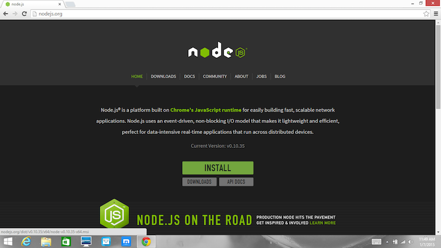
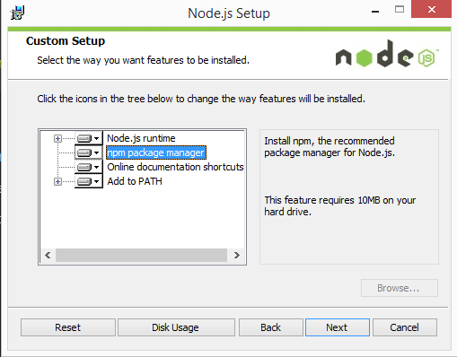
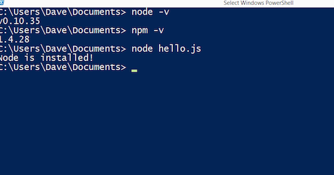
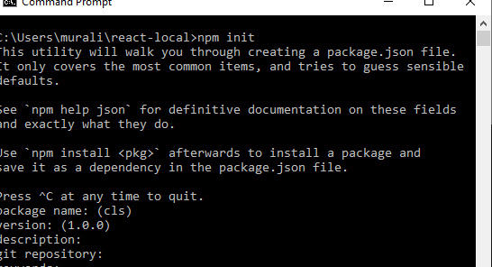
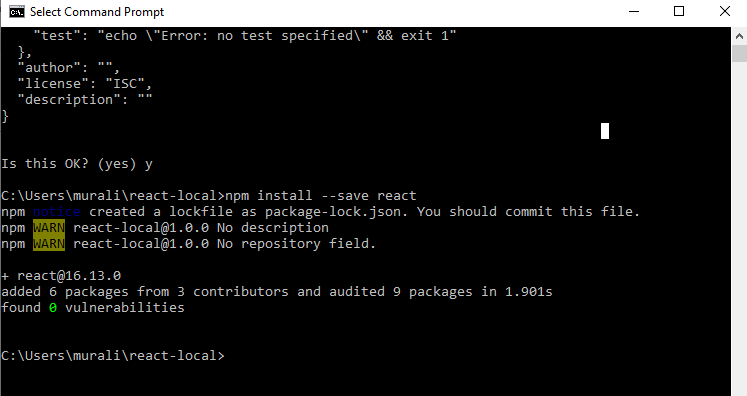
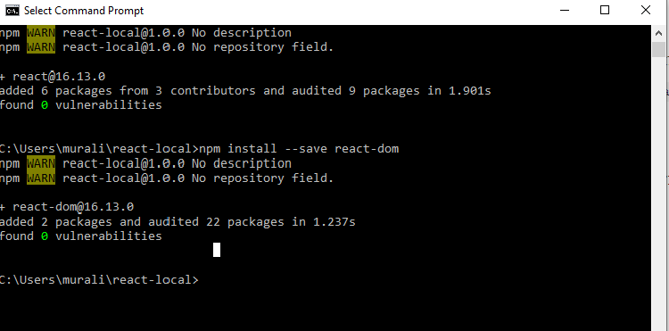
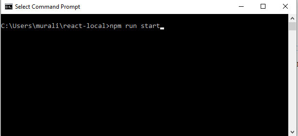
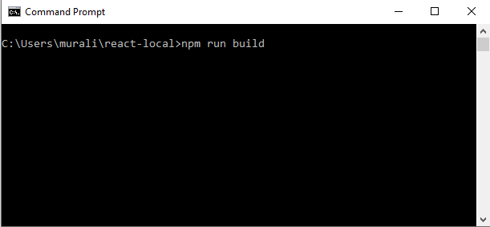

ReactJS
React Setup on local computer :
Part : I
- How to install Node.js and npm
- How npm is different than what you may be used to.
- How to create a package.json file, and what that means.
- How to install the React and ReactDOM
Installing Node and npm
- Download the windows installer from Nodejs.org 
2 . Run the installer

3 . Restart your computer. You won’t be able to run Node.js until your computer.
4 . Test node and npm versions.

npm init
1 . Make a new directory
Command : npm init
2 . npm init added

Install React
1 . Type the command for install react
Command : npm install --save react

Install React DOM
1 . Type the command for install react
Command : npm install --save react-dom 
Compile Command
1 . Run your program
Command : npm run start

2 .Build your programm
Command : npm start

References :
Additional Requirements :
1 . install Babel
Command : npm install --save-dev babel-core
2 . install Webpack
Command : npm install --save-dev webpack
Webpack-dev-server
Reference links :
1 . https://medium.com/@vikasharry03/react-setup-on-local-computer-912f9a551af3
2 . https://www.tutorialspoint.com/reactjs/reactjs_environment_setup.htm
3 . https://blog.cloudboost.io/how-to-setup-your-first-react-app-7faf81db8bce
INTERVIEW QUESTIONS
What is React?
- React is a front-end JavaScript library developed by Facebook in 2011.
- It follows the component based approach which helps in building reusable UI components.
- It is used for developing complex and interactive web and mobile UI.
- Even though it was open-sourced only in 2015, it has one of the largest communities supporting it.
What are the features of React?
Major Features are list below:
- It uses the virtual DOM instead of the real DOM
- It uses server-side rendering.
- It follows uni-directional data flow or data binding.
What are the features of React?
Some of the major advantages of React are:
- It increases the application’s performance
- It can be conveniently used on the client as well as server side
- Because of JSX, code’s readability increases
- React is easy to integrate with other frameworks like Meteor, Angular, etc
- Using React, writing UI test cases become extremely easy
What are the limitations of React?
Limitations of React are listed below:
- React is just a library, not a full-blown framework
- Its library is very large and takes time to understand
- It can be little difficult for the novice programmers to understand
- Coding gets complex as it uses inline templating and JSX
Differentiate between Real DOM and Virtual DOM
Real DOM | Virtual DOM |
1. It updates slow. | 1. It updates faster. |
2. Can directly update HTML. | 2. Can’t directly update HTML. |
3. Creates a new DOM if element updates. | 3. Updates the JSX if element updates. |
4. DOM manipulation is very expensive. | 4. DOM manipulation is very easy. |
5. Too much of memory wastage. | 5. No memory wastage. |
What is Props?
- Props is the shorthand for Properties in React
- They are read-only components which must be kept pure i.e. immutable
- They are always passed down from the parent to the child components throughout the application
- A child component can never send a prop back to the parent component.
- This help in maintaining the unidirectional data flow and are generally used to render the dynamically generated data
What is a state in React and how is it used?
- States are the heart of React components
- States are the source of data and must be kept as simple as possible
- Basically, states are the objects which determine components rendering and behavior
- They are mutable unlike the props and create dynamic and interactive components. They are accessed via this.state()
Differentiate between states and props
Conditions | State | Props |
1. Receive initial value from parent component | Yes | Yes |
2. Parent component can change value | No | Yes |
3. Set default values inside component | Yes | Yes |
4. Changes inside component | Yes | No |
5. Set initial value for child components | Yes | Yes |
6. Changes inside child components | No | Yes |
What are the different phases of React component’s lifecycle?
There are three different phases of React component’s lifecycle:
- Initial Rendering Phase: This is the phase when the component is about to start its life journey and make its way to the DOM.
- Updating Phase: Once the component gets added to the DOM, it can potentially update and re-render only when a prop or state change occurs. That happens only in this phase.
- Unmounting Phase: This is the final phase of a component’s life cycle in which the component is destroyed and removed from the DOM.
Explain the lifecycle methods of React components in detail.
Some of the most important lifecycle methods are:
- componentWillMount() – Executed just before rendering takes place both on the client as well as server-side.
- componentDidMount() – Executed on the client side only after the first render.
- componentWillReceiveProps() – Invoked as soon as the props are received from the parent class and before another render is called.
- shouldComponentUpdate() – Returns true or false value based on certain conditions. If you want your component to update, return true else return false. By default, it returns false.
- componentWillUpdate() – Called just before rendering takes place in the DOM.
- componentDidUpdate() – Called immediately after rendering takes place.
- componentWillUnmount() – Called after the component is unmounted from the DOM. It is used to clear up the memory spaces.
What is an event in React?
In React, events are the triggered reactions to specific actions like mouse hover, mouse click, key press, etc. Handling these events are similar to handling events in DOM elements. But there are some syntactical differences like:
- Events are named using camel case instead of just using the lowercase.
- Events are passed as functions instead of strings.
The event argument contains a set of properties, which are specific to an event. Each event type contains its own properties and behavior which can be accessed via its event handler only.
What do you know about controlled and uncontrolled components?
Controlled Components | Uncontrolled Components |
1. They do not maintain their own state | 1. They maintain their own state |
2. Data is controlled by the parent component | 2. Data is controlled by the DOM |
3. They take in the current values through props and then notify the changes via callbacks | 3. Refs are used to get their current values |
What are Higher Order Components(HOC)?
HOC can be used for many tasks like:
- Code reuse, logic and bootstrap abstraction
- Render High jacking
- State abstraction and manipulation and props manipulation
React Redux – React Interview Questions
What is Redux?
- Redux is one of the hottest libraries for front-end development in today’s marketplace.
- It is a predictable state container for JavaScript applications and is used for the entire applications state management.
- Applications developed with Redux are easy to test and can run in different environments showing consistent behavior.
What are the three principles that Redux follows?
- Single source of truth: The state of the entire application is stored in an object/ state tree within a single store. The single state tree makes it easier to keep track of changes over time and debug or inspect the application.
- State is read-only: The only way to change the state is to trigger an action. An action is a plain JS object describing the change. Just like state is the minimal representation of data, the action is the minimal representation of the change to that data.
- Changes are made with pure functions: In order to specify how the state tree is transformed by actions, you need pure functions. Pure functions are those whose return value depends solely on the values of their arguments.
List down the components of Redux.
Redux is composed of the following components:
- Action – It’s an object that describes what happened.
- Reducer – It is a place to determine how the state will change.
- Store – State/ Object tree of the entire application is saved in the Store.
- View – Simply displays the data provided by the Store.
What were the major problems with MVC framework?
Following are some of the major problems with MVC framework:
- DOM manipulation was very expensive
- Applications were slow and inefficient
- There was huge memory wastage
- Because of circular dependencies, a complicated model was created around models and views
How is Redux different from Flux?
Flux | Redux |
1. The Store contains state and change logic | 1. Store and change logic are separate |
2. There are multiple stores | 2. There is only one store |
3. All the stores are disconnected and flat | 3. Single store with hierarchical reducers |
4. Has singleton dispatcher | 4. No concept of dispatcher |
5. React components subscribe to the store | 5. Container components utilize connect |
6. State is mutable | 6. State is immutable |
What are the advantages of Redux?
Advantages of Redux are listed below:
- Predictability of outcome – Since there is always one source of truth, i.e. the store, there is no confusion about how to sync the current state with actions and other parts of the application.
- Maintainability – The code becomes easier to maintain with a predictable outcome and strict structure.
- Server-side rendering – You just need to pass the store created on the server, to the client side. This is very useful for initial render and provides a better user experience as it optimizes the application performance.
- Developer tools – From actions to state changes, developers can track everything going on in the application in real time.
- Community and ecosystem – Redux has a huge community behind it which makes it even more captivating to use. A large community of talented individuals contribute to the betterment of the library and develop various applications with it.
- Ease of testing – Redux’s code is mostly functions which are small, pure and isolated. This makes the code testable and independent.
- Organization – Redux is precise about how code should be organized, this makes the code more consistent and easier when a team works with it.
React Router – React Interview Questions
What is React Router?
- React Router is a powerful routing library built on top of React, which helps in adding new screens and flows to the application.
- This keeps the URL in sync with data that’s being displayed on the web page.
- It maintains a standardized structure and behavior and is used for developing single page web applications.
- React Router has a simple API.
Why do we need a Router in React?
- A Router is used to define multiple routes and when a user types a specific URL, if this URL matches the path of any ‘route’ defined inside the router, then the user is redirected to that particular route.
- So basically, we need to add a Router library to our app that allows creating multiple routes with each leading to us a unique view.
<switch>
<route exact path=’/’ component={Home}/>
<route path=’/posts/:id’ component={Newpost}/>
<route path=’/posts’ component={Post}/>
</switch>
List down the advantages of React Router.
Few advantages are:
- Just like how React is based on components, in React Router v4, the API is ‘All About Components’. A Router can be visualized as a single root component (<BrowserRouter>) in which we enclose the specific child routes (<route>).
- No need to manually set History value: In React Router v4, all we need to do is wrap our routes within the <BrowserRouter> component.
- The packages are split: Three packages one each for Web, Native and Core. This supports the compact size of our application. It is easy to switch over based on a similar coding style.
How is React Router different from conventional routing?
Topic | Conventional Routing | React Routing |
PAGES INVOLVED | Each view corresponds to a new file | Only single HTML page is involved |
URL CHANGES | A HTTP request is sent to a server and corresponding HTML page is received | Only the History attribute is changed |
FEEL | User actually navigates across different pages for each view | User is duped thinking he is navigating across different pages |
<route exact path=’/’ component={Home}/>
<route path=’/posts/:id’ component={Newpost}/>
<route path=’/posts’ component={Post}
<switch>
<route exact path=’/’ component={Home}/>
<route path=’/posts/:id’ component={Newpost}/>
<route path=’/posts’ component={Post}/>
</switch>
<switch>
<route exact path=’/’ component={Home}/>
<route path=’/posts/:id’ component={Newpost}/>
<route path=’/posts’ component={Post}/<switch>
<route exact path=’/’ component={Home}/>
<route path=’/posts/:id’ component={Newpost}/>
<route path=’/posts’ component={Post}/>
</switch>